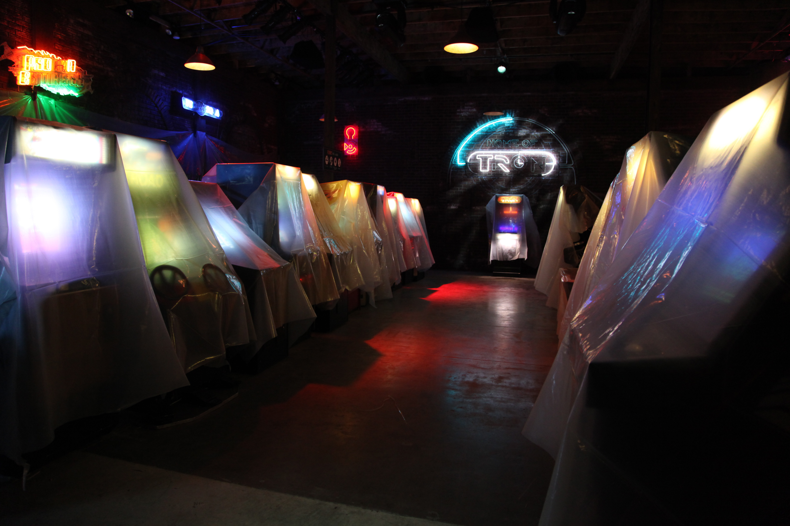

Welcome to Flynn's Arcade
Flynn's Arcade is a multi-floored building filled with multiple video games and arcade games, this establishment is owned and functioned by the gifted computer programmer, Kevin Flynn. The ground floor of this building is where all the arcade games can be experienced and enjoyed, above this fun filled arcade is a floor full of office space and room for work. Many of the higher floors are being renovated and furnished to serve as accomodation for visitors. The basement of this establishment can be accessed through a hidden door behind the game TRON on the bottom floor. The arcade was originally located on Watseka St., which was later renamed Mead St. The arcade's neighborhood appeared to have been a bustling night time amusement and entertainment area at the time, and Flynn's was a popular hang-out for teens and had many video games including Q*bert, Donkey Kong Jr., Pac-Man, Tetris and many more games.
